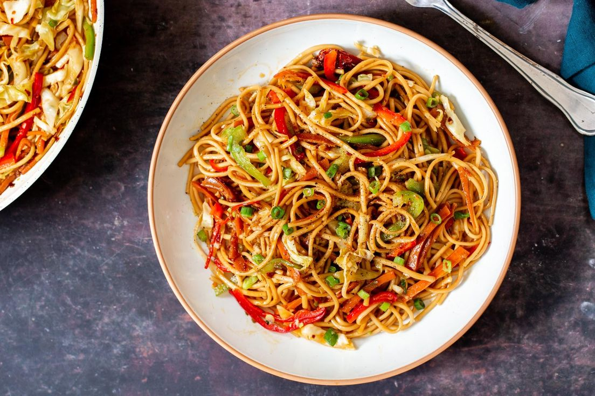

Back to Home

Veggie Stir-Fry Noodles
Veggie Stir-Fry Noodles is a quick and vibrant dish that brings together tender noodles, crisp vegetables, and a flavorful sauce
in perfect harmony. It’s a versatile meal that’s as satisfying as it is healthy, bursting with fresh ingredients like broccoli, bell
peppers, and snap peas. Whether you’re looking for a weeknight dinner or a way to use up leftover veggies, this dish is a go-to favorite.
Tossed in a savory mix of soy sauce, garlic, and sesame oil, it’s a delicious way to enjoy a wholesome, plant-based meal that feels both
comforting and energizing.
Prep Time: 10 min
Cook Time: 15 min
Total Time: 25 min
18 Likes
Ingredients
- 200g noodles (any type: rice, soba, or spaghetti)
- 2 tbsp soy sauce
- 1 tbsp sesame oil (or any cooking oil)
- 1 clove garlic, minced
- 1 cup mixed vegetables (e.g., bell peppers, carrots, broccoli, zucchini)
- Optional toppings: sesame seeds, green onions
Preparation
- Cook the noodles according to package instructions. Drain and set aside.
- Heat sesame oil in a pan over medium heat. Add garlic and sauté until fragrant.
- Add the mixed vegetables and stir-fry for 5-7 minutes until tender-crisp.
- Mix in the cooked noodles and soy sauce. Stir well to coat everything evenly.
- Serve hot, garnished with sesame seeds or green onions.